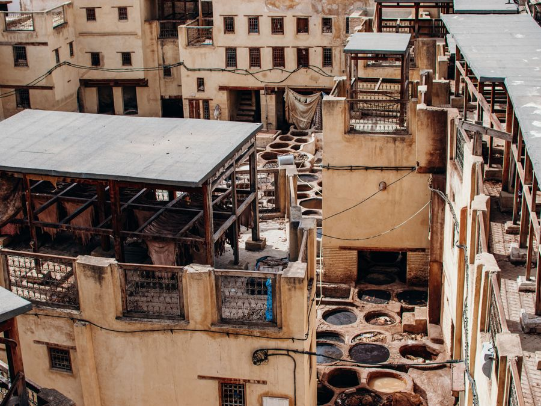

Tour privato · 12 giorni / 11 notti
Il grande Marocco: tour privato di 12 giorni da Marrakech
Un giro privato di 12 giorni del Marocco con partenza e arrivo a Marrakech: kasbah dell’Atlante, dune del Sahara, la città imperiale di Fes, le vie blu di Chefchaouen e la costa atlantica.
- Tour 100% privato
- Andata e ritorno da Marrakech
- Sahara, città imperiali e costa
- Cancellazione gratuita fino a 14 giorni prima
Tutto il paese, in un unico giro
Se hai quasi due settimane, questo è il modo più completo di vedere il Marocco con calma. Ogni giorno unisce guida e visita, e ci sono giornate di riposo a Chefchaouen ed Essaouira.
Questo giro di 12 giorni percorre circa 2.600 km. Vedi il deserto, tre città imperiali (Fes, Meknes e Rabat), la città del Rif Chefchaouen, la moschea Hassan II di Casablanca ed Essaouira, e torni a Marrakech per il volo.
- Marrakech
- Ait Ben Haddou
- Merzouga
- Fes
- Chefchaouen
- Rabat
- Casablanca
- Essaouira
- Marrakech
Itinerario di 12 giorni passo dopo passo
1Marrakech – arrivo e medinaGiornata libera
Incontri l’autista e ti sistemi. Esplora Jemaa el-Fna, la Koutoubia e i suq con i tuoi tempi o con una guida facoltativa.
2Marrakech – Ait Ben Haddou – valle del Dades≈ 330 km · 8 h con soste
Attraversi il passo del Tizi n’Tichka, visiti Ait Ben Haddou e guidi per Ouarzazate e Skoura fino alla valle del Dades.
3Dades – gola del Todra – Merzouga≈ 300 km · 6–7 h di guida
Cammini nella gola del Todra e prosegui per Merzouga per un giro in cammello al tramonto e una notte in un campo nel deserto.
4Merzouga – valle dello Ziz – Midelt – Ifrane – Fes≈ 460 km · 8–9 h di guida
Dopo l’alba tra le dune, guidi verso nord attraversando il Medio Atlante per Midelt, Azrou e Ifrane fino a Fes.
5Fes – la medina imperialeGiornata intera
Trascorri la giornata a Fes el-Bali con una guida autorizzata facoltativa: conceria Chouara, madrase e quartiere di Al-Qarawiyyin.
6Fes – Volubilis – Meknes – Chefchaouen≈ 290 km · 5–6 h di guida
Visiti le rovine romane di Volubilis e le antiche porte di Meknes, poi prosegui per la città blu di Chefchaouen, sulle montagne del Rif.
7Chefchaouen – giornata liberaGiorno di riposo
Passeggia tra i vicoli blu, fai acquisti di artigianato o sali al belvedere della Moschea Spagnola per il tramonto.
8Chefchaouen – Rabat≈ 210 km · 3,5–4 h di guida
Guidi fino alla capitale. Visiti la kasbah degli Oudaia, la Torre Hassan e il mausoleo di Mohammed V.
9Rabat – Casablanca – Essaouira≈ 460 km · 7–8 h con soste
Ti fermi a Casablanca per la moschea Hassan II, poi prosegui verso sud lungo la costa atlantica fino a Essaouira. Una giornata lunga con diverse soste.
10Essaouira – giornata liberaGiorno di riposo
Percorri le mura, il porto dei pescatori e la medina, assaggia pesce fresco e curiosa tra i negozi di argan e di lavorazione del legno.
11Essaouira – Marrakech≈ 175 km · 3 h di guida
Torni a Marrakech attraverso le foreste di argan. Pomeriggio libero per gli ultimi souvenir.
12Marrakech – partenzaTrasferimento in aeroporto
Colazione e trasferimento all’aeroporto Menara di Marrakech o alla tua prossima destinazione.
Cosa vedrai e farai



Cosa include il tuo tour privato
Incluso
- Auto o minivan privati con aria condizionata
- Autista che parla inglese o spagnolo
- Carburante, pedaggi e parcheggio
- Alloggio: 10 notti in hotel o riad + 1 notte in un campo nel deserto
- Colazione e cena durante il tour
- Giro in cammello e notte in un campo nel deserto
- Ritiro a Marrakech
Non incluso
- Pranzi e bevande
- Biglietti d’ingresso (kasbah, moschee, musei)
- Guide locali nelle città (facoltative)
- Mance e assicurazione di viaggio
Domande su Tour di 12 giorni da Marrakech
Bastano 12 giorni per vedere il Marocco?
Bastano per un giro completo: Marrakech, il Sahara, Fes, Chefchaouen, Rabat, Casablanca ed Essaouira. Per più tempo in ogni luogo, chiedici una versione di 14 o 15 giorni.
Ci sono giorni di riposo?
Sì. Il primo giorno a Marrakech, una giornata libera a Chefchaouen e una a Essaouira rendono il viaggio rilassato.
Possiamo cambiare l’ordine o saltare una città?
Sì. È un tour privato e completamente personalizzabile: aggiungi notti, togli una tappa o inverti la direzione.
Come prenoto il tour?
Inviaci le tue date su WhatsApp o tramite il modulo di contatto. Confermi con un acconto del 20% e paghi il resto in Marocco. La cancellazione è gratuita fino a 14 giorni prima della partenza.
Pronto a partire?
Indicaci le tue date e organizzeremo il tuo viaggio privato: Tour di 12 giorni da Marrakech.
Scrivi su WhatsAppVedi tutti i tour da Marrakech